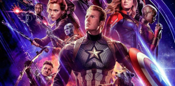

The Secret World of Arrietty (2010)
as Shô (UK version, voice)
The Impossible (2012)
as Lucas
Moments (2013) - Short Film
as Boy
Locke (2013)
as Eddie (voice)
How I Live Now (2013)
as Isaac
Billy Elliot, the Musical Live (2014)
Camero as Former Billy (Encore)
Tweet (2015) - Short Film
as Tom
In the Heart of the Sea (2015)
as Thomas Nickerson
Captain America: Civil War (2016)
as Peter Parker / Spider-Man
Edge of Winter (2016)
as Bradley Baker
The Lost City of Z (2016)
as Jack Fawcett
Pilgrimage (2017)
as Brother Diarmuid - The Novice
Spider-Man: Homecoming (2017)
as Peter Parker / Spider-Man
The Current War: Director's Cut (2017)
as Samuel Insull
Avengers: Infinity War (2018)
as Peter Parker / Spider-Man

Avengers: Endgame (2019)
as Peter Parker / Spider-Man
Spider-Man: Far from Home (2019)
as Peter Parker / Spider-Man
Spies in Disguise (2019)
as Walter (voice)
Dolittle (2020)
as Jip (voice)
Onward (2020)
as Ian Lightfoot (voice)
The Devil All the Time (2020)
as Arvin